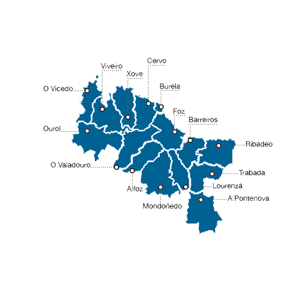

En la Mariña Lucense los bosques se confunden con el mar. Es la Galicia Verde que se asoma el Cantábrico. Cerca de 100 km de costa salpicada de maravillas naturales. Del paisaje recoleto de la ría de O Barqueiro a la grandiosidad de la praia de As Catedrais, un monumento natural excavado por el mar con una dimensión sobrenatural. Del estuario del río Sor, paraíso de peces y aves acuáticas, al estuario del Eo, Reserva de la Biosfera. Pero además, Foz, Viveiro y Ribadeo, puertos que conservan la huella de un pasado señorial. En Cervo, Sargadelos, una de las cerámicas más emblemática de Galicia. Y en el interior de la Mariña Lucense, dos tesoros ocultos. Uno es la Serra do Xistral, sombría y misteriosa, tierra de turberas y caballos salvajes. El otro es Mondoñedo, en el Camino de Santiago (el del Norte), antigua sede episcopal con una hermosa catedral del siglo XIII.
Un territorio diverso y auténtico para visitar en cualquier época del año, de gente hospitalaria, que destaca por su patrimonio natural y cultural, la rica y variada gastronomía y la tranquilidad. Te invitamos a descubrir con una mirada pausada e intensa esos detalles pequeños y variados que definen a este territorio y lo hacen diferente.
